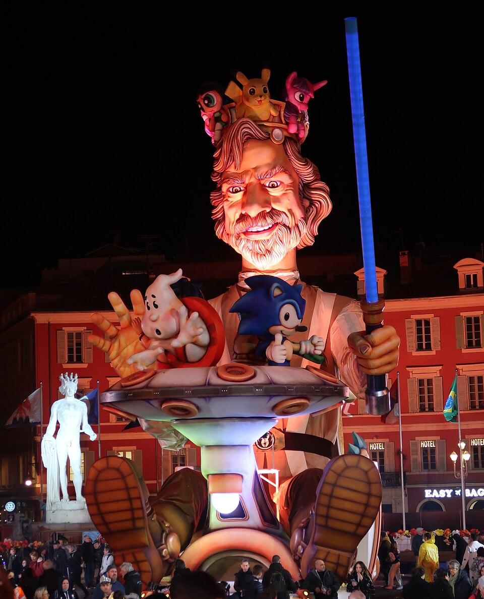

Le carnaval de Nice
Le carnaval de Nice est le plus grand carnaval de France et l'un des plus célèbres du monde. Il se déroule chaque hiver à Nice, au mois de février pendant deux semaines incluant trois week-ends, et attire plusieurs centaines de milliers de participants. Le carnaval est l'un des quatre plus grands carnavals au monde, après ceux de Rio, Venise et La Nouvelle-Orléans.
